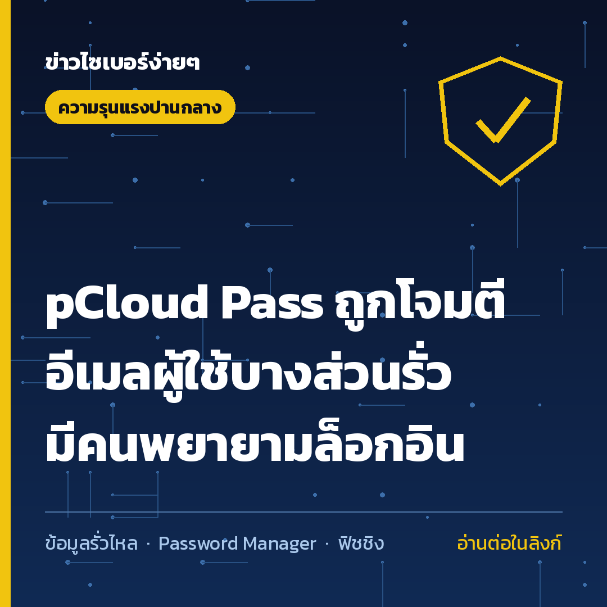

pCloud Pass ถูกโจมตี อีเมลผู้ใช้บางส่วนรั่ว มีคนพยายามล็อกอิน
สรุปสั้นๆ
pCloud Pass แอปจัดการรหัสผ่านของบริษัทสัญชาติสวิส ยืนยันว่าถูกโจมตีทางไซเบอร์ ทำให้อีเมลของผู้ใช้จำนวนหนึ่งรั่วไหลและมีความพยายามล็อกอินเข้าบัญชี บริษัทบอกว่ารหัสผ่านที่เก็บไว้ยังถูกเข้ารหัสและปลอดภัย แต่ผู้ใช้ควรระวังอีเมลหลอกขอ Master Password

📰 เกิดอะไรขึ้น
ผู้ใช้หลายคนบน Reddit ได้รับอีเมลแจ้งว่ามีอุปกรณ์ใหม่ที่ไม่รู้จักเชื่อมต่อเข้าบัญชี pCloud Pass ของตัวเอง ทั้งที่เปิดใช้ 2FA (การยืนยันตัวตนสองชั้น) ไว้แล้ว ทุกกรณีเป็นอุปกรณ์ชื่อ "pd" ที่เชื่อมต่อมาจาก IP ซึ่งเป็นของเซิร์ฟเวอร์ pCloud เองในลักเซมเบิร์ก
หลังจากนั้น pCloud ออกมายืนยันว่าเกิดการโจมตีที่ pCloud Pass จริง และทีมงานควบคุมสถานการณ์ได้แล้ว อีเมลของผู้ใช้ "จำนวนเล็กน้อย" ถูกเปิดเผย และมีความพยายามล็อกอิน ระบบได้ส่งอีเมลแจ้งเตือนไปยังผู้ใช้ที่ได้รับผลกระทบโดยอัตโนมัติ
บริษัทยืนยันว่ารหัสผ่าน โน้ต และข้อมูลอื่นใน pCloud Pass ถูกเข้ารหัส และเปิดได้ด้วย Master Password เท่านั้น ส่วนบริการเก็บไฟล์ pCloud Cloud Storage ไม่ได้รับผลกระทบ
อย่างไรก็ตาม pCloud ยังไม่ได้บอกว่าคนร้ายเข้ามาได้อย่างไร เกิดขึ้นเมื่อไหร่ และการพยายามล็อกอินสำเร็จหรือไม่ รวมถึงยังไม่ชัดว่าคนร้ายได้ไฟล์ตู้เก็บรหัสผ่าน (Vault) ที่เข้ารหัสไปหรือเปล่า
🔎 ข้อมูลเพิ่มเติมจากแหล่งอื่น
บริษัทความปลอดภัย Brandefense ระบุว่า สิ่งที่ยังไม่ชัดเจนคือไฟล์ Vault ที่เข้ารหัสถูกเข้าถึงหรือคัดลอกไปหรือไม่ และมีการล็อกอินครั้งไหนที่กลายเป็นการเข้าใช้งานจริงหรือไม่ พร้อมเตือนว่าการได้อีเมลแจ้งล็อกอินใหม่ทั้งที่เปิด 2FA ไว้ ยังไม่ได้พิสูจน์ว่าคนร้ายผ่าน 2FA ได้
เหตุการณ์นี้เป็นครั้งที่สามในเดือนเดียวที่แอปจัดการรหัสผ่านถูกโจมตี ก่อนหน้านี้ mSeven Software ผู้ทำแอป mSecure แจ้งว่าคนร้ายได้สำเนาฐานข้อมูลที่เข้ารหัสของผู้ใช้ไป และ 1Password ก็เปิดเผยว่าคนร้ายยึดบัญชี GitHub ของพนักงานได้ตั้งแต่ราววันที่ 19 พฤศจิกายน 2026 แล้วขโมยข้อมูลบางส่วนของลูกค้า เช่น ชื่อและอีเมล ตามรายงานของ Help Net Security ส่วนข้อมูลในตู้เก็บรหัสผ่านไม่ได้รับผลกระทบ
👥 ใครได้รับผลกระทบ
- ผู้ใช้ pCloud Pass จำนวนหนึ่งที่อีเมลถูกเปิดเผยและได้รับอีเมลแจ้งเตือนจาก pCloud
- ผู้ใช้ pCloud Pass ทุกคนที่อาจตกเป็นเป้าของอีเมลหรือข้อความหลอกลวง (ฟิชชิง) ต่อจากนี้
- ผู้ใช้บริการ pCloud Cloud Storage ไม่ได้รับผลกระทบตามที่บริษัทแจ้ง
✅ ควรทำอย่างไร
- เปิดแอปหรือเว็บ pCloud เองโดยตรง อย่ากดลิงก์ในอีเมลแจ้งเตือน
- เข้าไปดูรายการอุปกรณ์ที่เชื่อมต่อในส่วนตั้งค่าความปลอดภัย แล้วลบอุปกรณ์หรือเซสชันที่ไม่รู้จักออก
- ถ้าเห็นการใช้งานแปลก ๆ ให้เปลี่ยนรหัสผ่านบัญชี เปิดใช้ 2FA และติดต่อฝ่ายซัพพอร์ตของ pCloud
- ห้ามบอก Master Password หรือคำกู้คืนบัญชี (Recovery words) กับใครทางอีเมล โทรศัพท์ หรือแชต pCloud บอกว่าจะไม่ขอข้อมูลเหล่านี้
- องค์กรที่ใช้ pCloud Pass ควรสอบถามผู้ให้บริการว่าบัญชีไหนได้รับผลกระทบ ช่วงเวลาที่มีการพยายามล็อกอิน และมีเซสชันใดสำเร็จหรือไม่
📖 คำศัพท์น่ารู้
- Password Manager
- แอปที่ช่วยจำและเก็บรหัสผ่านทั้งหมดของเราไว้ในที่เดียว โดยล็อกด้วยรหัสหลักเพียงตัวเดียว
- Master Password
- รหัสผ่านหลักที่ใช้เปิดตู้เก็บรหัสผ่าน ถ้าใครได้ไปก็เปิดดูรหัสผ่านทั้งหมดได้
- 2FA
- การยืนยันตัวตนสองชั้น เช่น ต้องใส่รหัสผ่านและรหัส OTP จากมือถือ
- ฟิชชิง (Phishing)
- การหลอกให้เรากรอกรหัสผ่านหรือข้อมูลสำคัญ ผ่านอีเมล ข้อความ หรือเว็บปลอม
แหล่งอ้างอิง
- pCloud Password Manager Hit by Cyber Attack Involving Email Address Exposure and Login Attempts The Hacker News (ข่าวต้นฉบับ)
- pCloud Pass Attack: What Is Confirmed - Brandefense brandefense.io
- 1Password breached through hijacked employee GitHub account, customer names and emails stolen - Help Net Security helpnetsecurity.com
บทความนี้เรียบเรียงเป็นภาษาไทยโดยใช้ AI ช่วยจากแหล่งข่าวด้านบน โปรดตรวจสอบรายละเอียดจากแหล่งอ้างอิงก่อนนำไปใช้